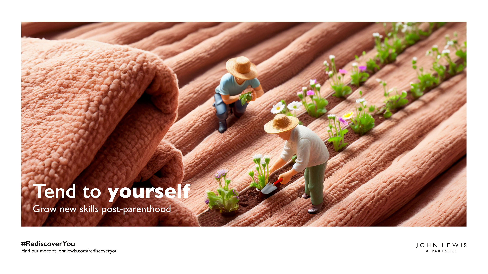
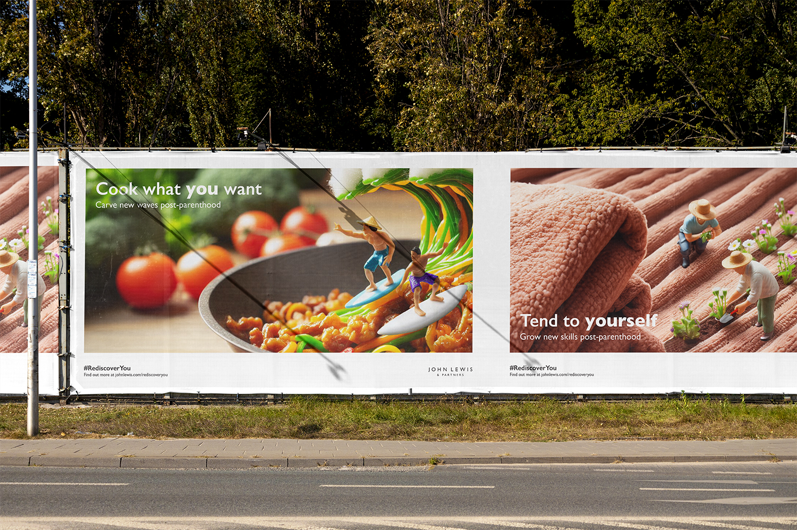
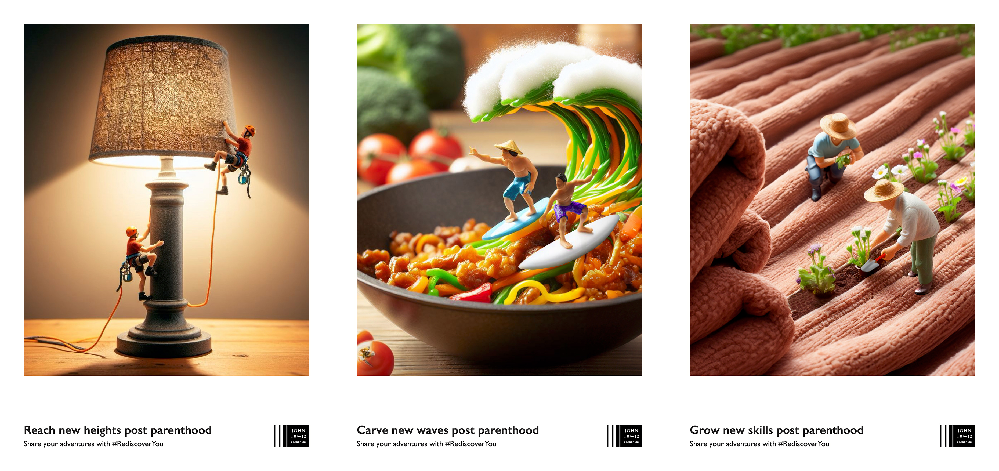
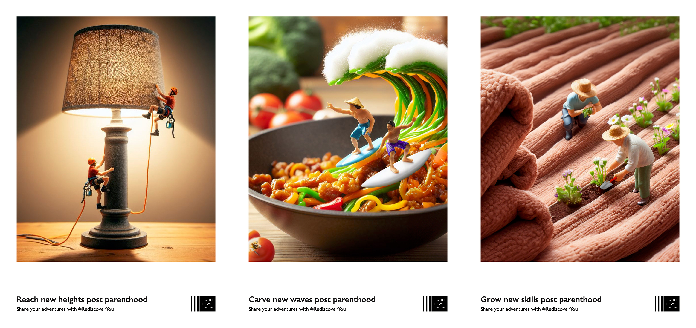
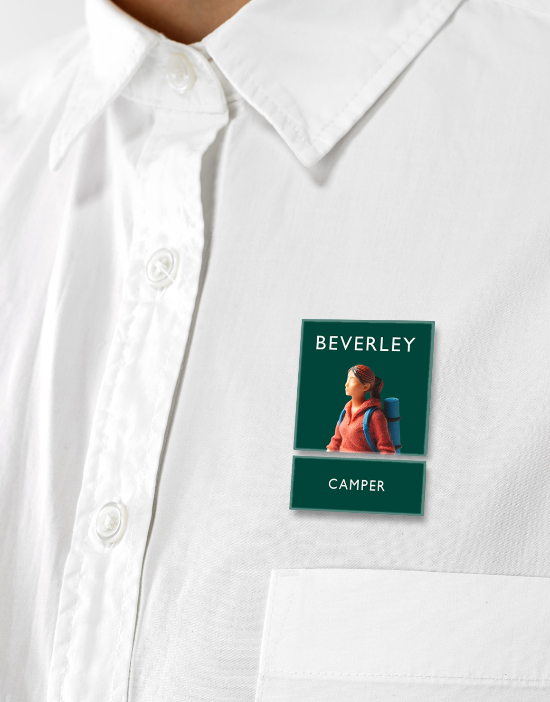
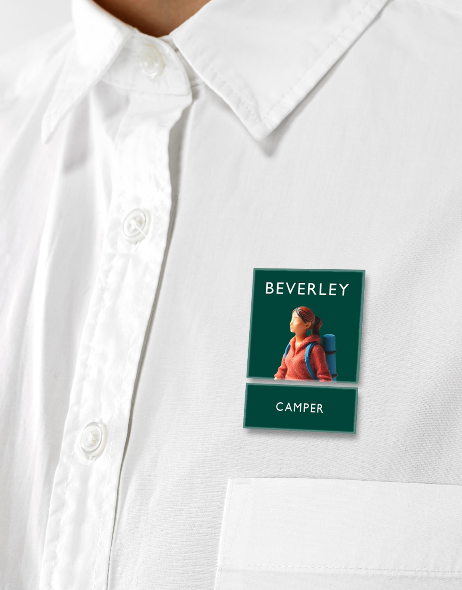
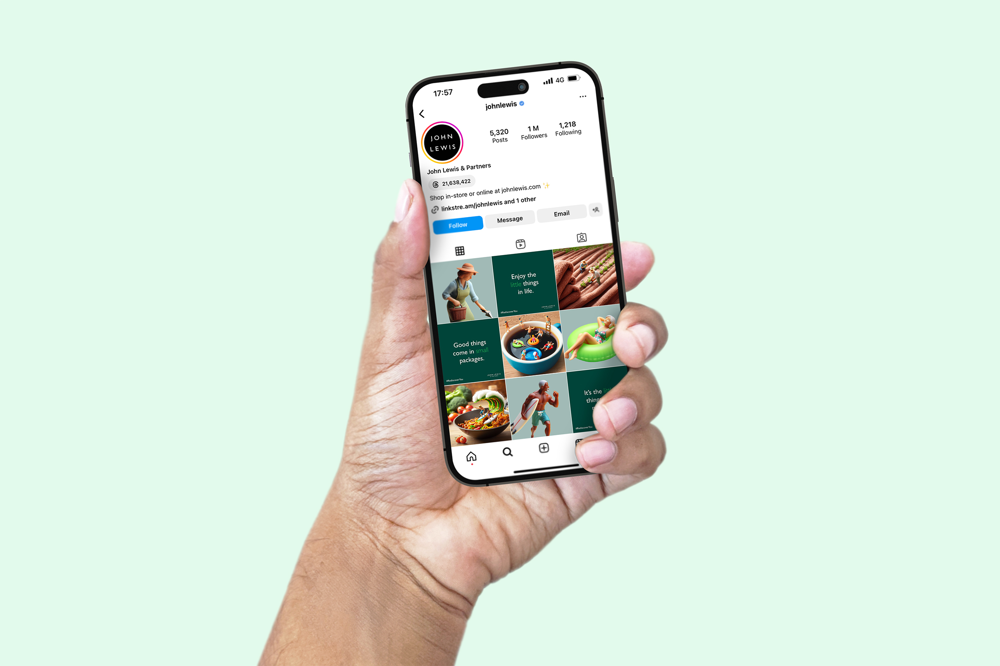
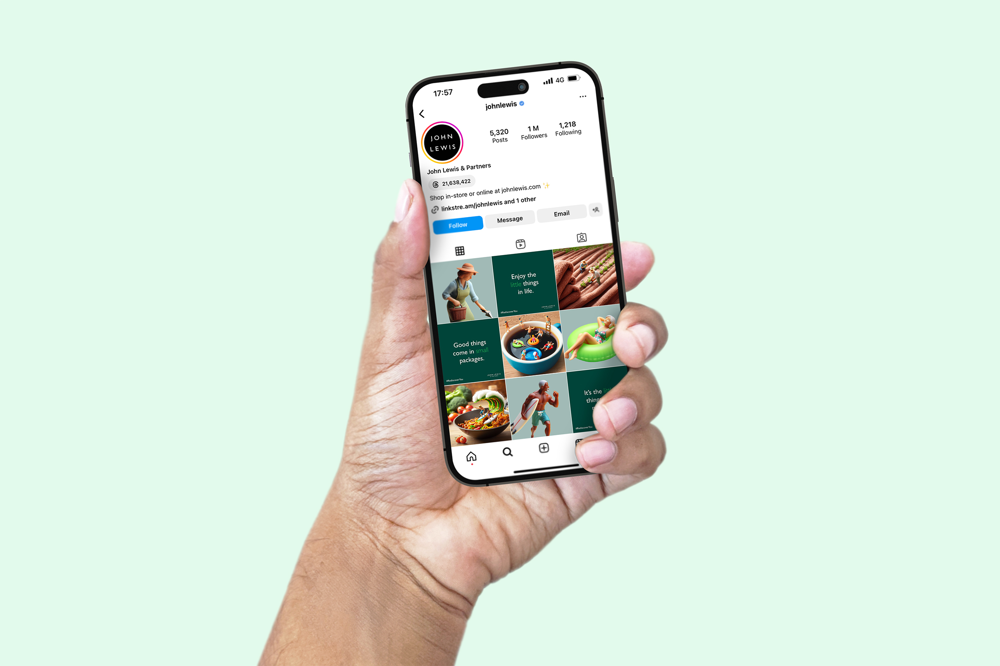

Project outcomes
• 10s+ social animation
• 3x Printed posters
• 3x billboard posters
• 2x Staff uniform badges
• 2x social media mockups
• 3x Website Pages
My response
Working on a team with two others, we created the following campaign using miniature figures and AI generated art to conquer loneliness using John Lewis' tone of voice.
Video links on this page are broken - working to fix it soon
  



 

 
